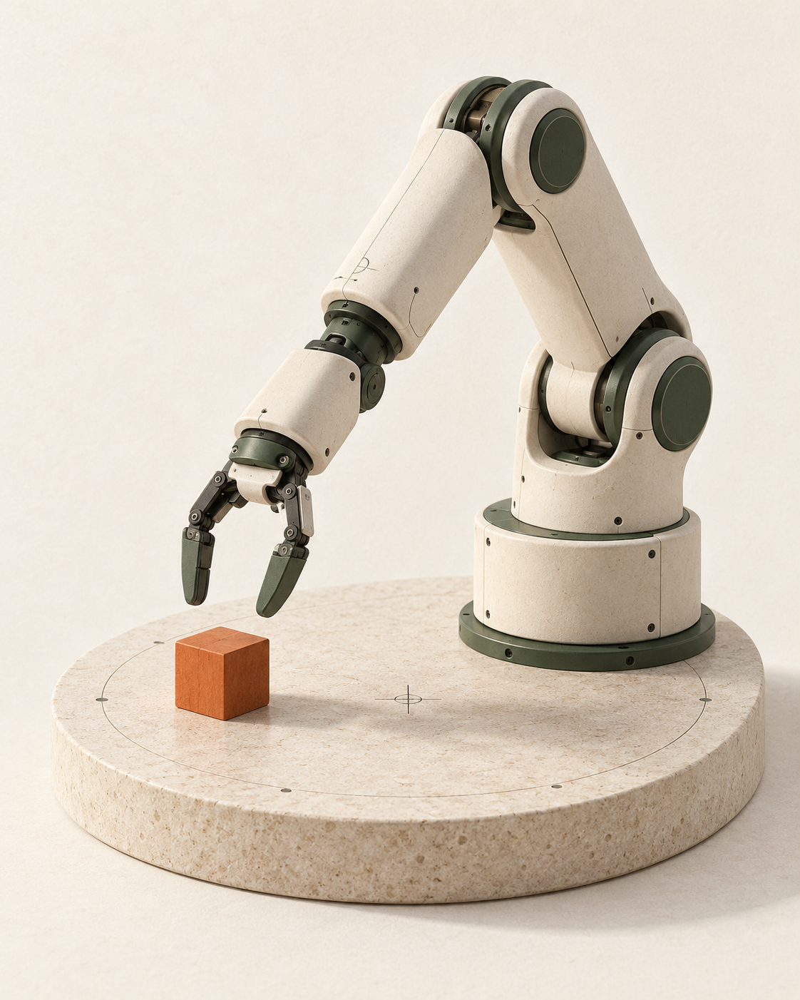
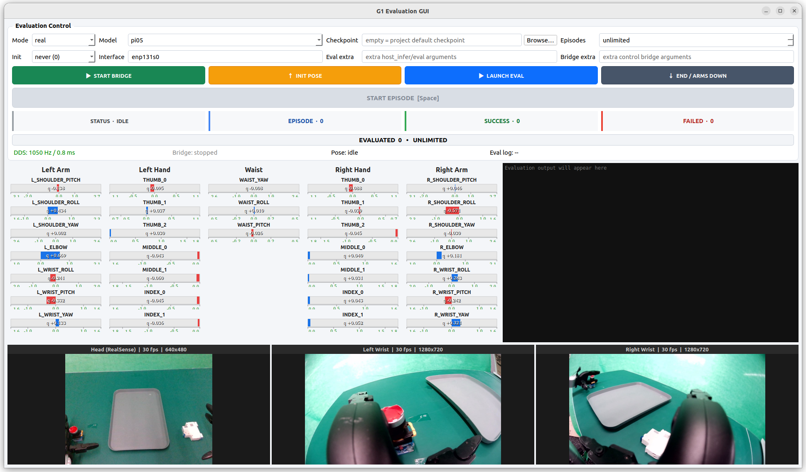
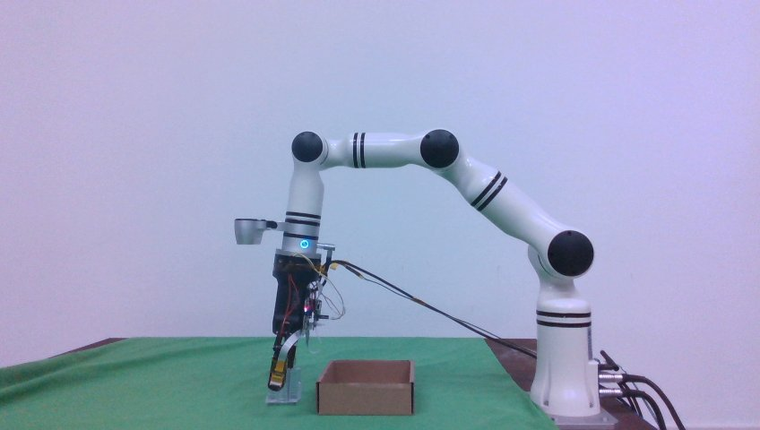
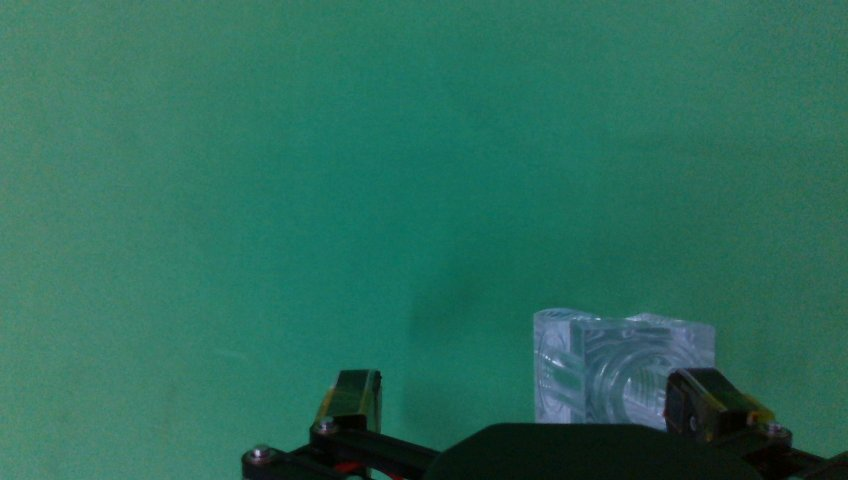

中国 · 深圳
你好，我是
饶小建。
也可以叫我 James。
在深圳大学读计算机，最近主要在做机器人。
采数据、跑仿真，再把模型放到真实的机械臂和灵巧手上试一试。这里放一些正在做的项目。

01 / 一些项目
最近在折腾什么

真机评估界面01机器人
sim2real_g1
让 G1 的双臂和灵巧手跑起策略模型。先在仿真里试，再到真机上看实际效果。


主视角 / 腕部视角02真机数据
RealDataCollect
把相机、触觉和机器人状态一起采下来，检查、清洗，再整理成能用来训练的数据。
灵巧手重定向 · 概念图
03灵巧手
LEAP-DexRetarget
把人手动作映射到灵巧手上。目前在做重定向和仿真验证，后面接数据采集与模仿学习。
AI NPC · 封面插画
04游戏里的 AI
SV_Soul
给《星露谷物语》的 NPC 加上 AI 对话。让角色记得聊过的事，也知道游戏里正在发生什么。
项目里的一些画面
G1 的 Isaac Sim 仿真场景点击放大 ↗
02 / 近况
手头的事情
主要还是围着真机转。
把模型放到机器人上
在 G1 和 Piper-X 上做策略部署与评估，看看仿真里的表现能带过去多少。
把数据整理好
做 RGB-D、触觉和机器人状态的采集与对齐，让后面的训练和回放少踩一些坑。
继续试灵巧手
从人手重定向开始，一步步接上仿真、数据和模仿学习。
03 / 联系
有想聊的，来打个招呼。
项目相关的问题可以直接提 issue，也欢迎聊机器人、数据，或者游戏里的 AI。